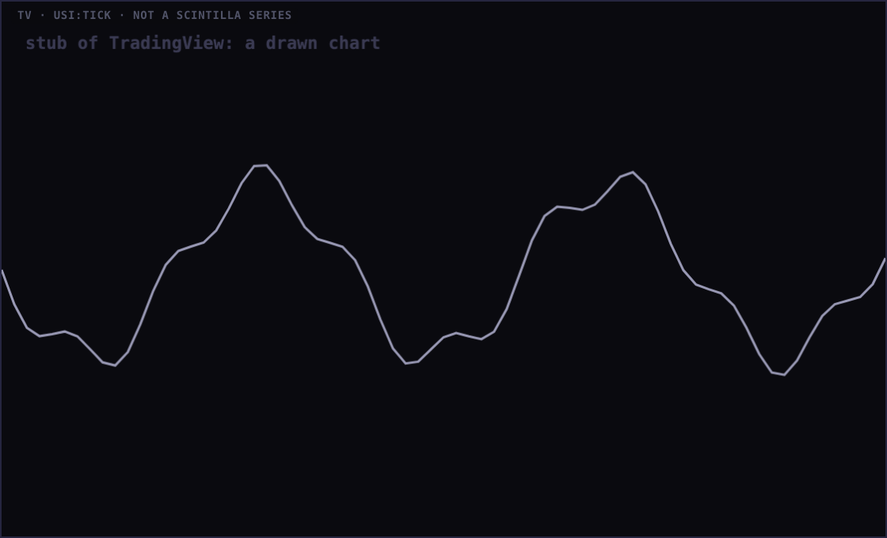
Built into the real Station on branch station/polish-20260923, from production 698cab5, in a new worktree. Every picture was taken in a real headless Chromium on the MacBook at device scale 2, from a local static server of the tree named in the caption, with every outside host blocked (so the charts read "delayed" and the feeds "unavailable": that is the offline harness, not the Station). Auto-hide was switched off for the strip shots so the strip is in view. Nothing is deployed and nothing is pushed.
| Alan, verbatim | What the strip now does | Proof |
|---|---|---|
| "I like the new dock. But they kind of blend together." | Each section sits on its own dark tint (#13131F) inside the one strip, edged by a hairline you can see (#36364F, 1.69:1 on the strip; the old divider was 1.15:1) with a 6 px gap to its neighbour. Still one strip, still centred, still the arc and the lip. | §2, §6 |
| "Some of these are grayed out. I can't see shit." | Every dock label measures at least 5.46:1 at every width (rest chips 7.9:1, group labels and the readout 5.9:1). The two culprits were the wrapped-state group labels in --mute (1.76:1) and disabled chips in --mute at 56 % opacity (about 1.4:1). A disabled chip is now --dim at full opacity behind a dashed edge: readable, and still obviously "not now". | §2 tables, §4 |
| "Below ~1100 px the dock wraps to two rows" | It never wraps. Above the fit floor it shrinks as a whole (never below 85 %, so the type never drops under about 7.3 px); below it the strip stays one row and scrolls sideways inside itself. Measured one row at 1680, 1100, 1000, 900, 1180, 820 and 390 px. | §2 |
| "How's that going to work on mobile?" | iPad and phone get the single scrollable strip: a finger drags it, the group labels come back (TIMEFRAME · CHARTS · SCENE · SCREEN · AUTO ROTATE · PANES) so a chip you scrolled to says what it belongs to. On the iPad the data age rides the right edge as a cap; on a phone it sits at the end of the strip so it covers nothing. The ⋯ panel hangs from the viewport, so the scrolling box cannot clip it. | §2 iPad and 390, §4 |
| "Why is there shit about the YouTube at the top?" | Still gone. The video section stays hidden and no feed button is in the dock; the video pane's own dropdown chooses the feed; the bottom row stays 50/50. Pinned by a test. | §2 (no video chips in any shot), tests |
| The faint "TRADINGVIEW · DRAWING USI:…" over internals that had already drawn | The waiting line was held on top of the frame for 14 s after it loaded. It now lives under the frame (frame z 2, line z 1) and starts transparent, so it shows only through a frame that has not painted yet, and it is removed 1.2 s after load, or after 8 s regardless. It cannot sit on a drawn chart any more. | §3 |
"before" is production 698cab5 exported with git archive; "after" is this branch. Contrast is computed from the browser's own computed colours, compositing the label colour and every ancestor's background and opacity, the way the pixels are painted.
| before (698cab5) | after (this branch) | |
|---|---|---|
| measured | 1 row · one line, zoom 1 · strip 28 px · lowest label contrast 6.95:1 · below 4.5:1: 0 | 1 row · one line, zoom 1 · strip 34 px · lowest label contrast 7.22:1 · below 4.5:1: 0 |
| labels under 4.5:1 before | none | |
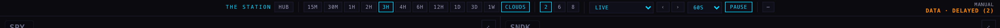
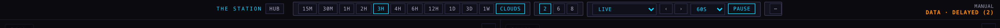
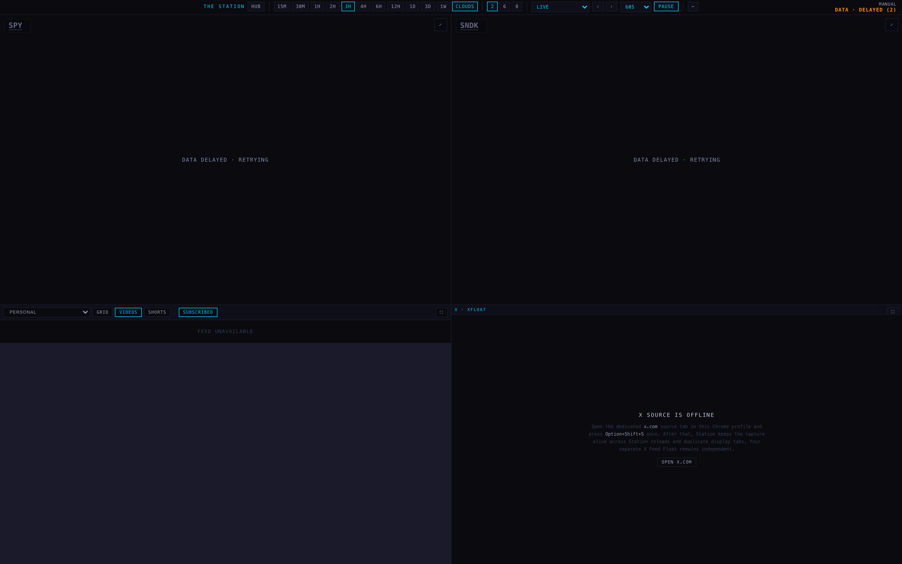
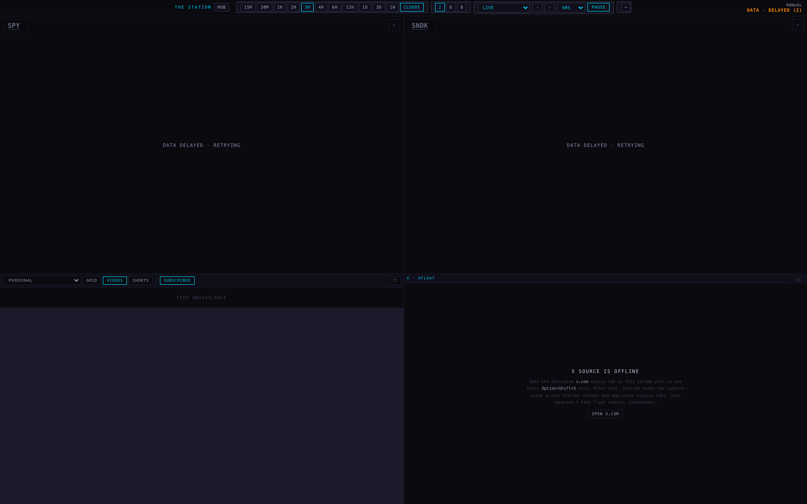
| before (698cab5) | after (this branch) | |
|---|---|---|
| measured | 1 row · one line, zoom 0.945 · strip 24.9 px · lowest label contrast 6.95:1 · below 4.5:1: 0 | 1 row · one line, zoom 0.919 · strip 30 px · lowest label contrast 7.22:1 · below 4.5:1: 0 |
| labels under 4.5:1 before | none | |
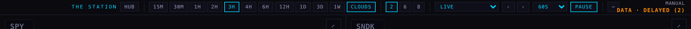
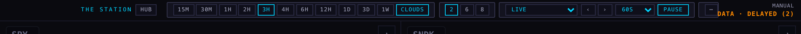
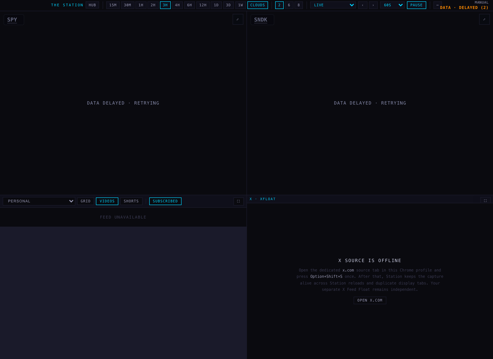
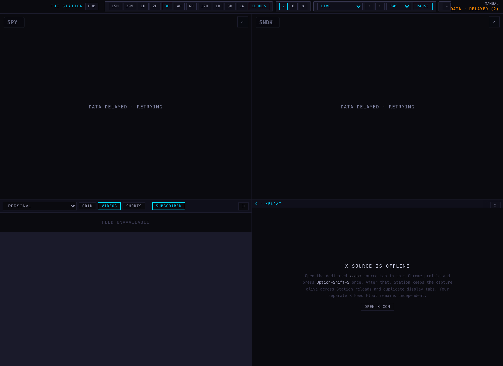
| before (698cab5) | after (this branch) | |
|---|---|---|
| measured | 1 row · one line, zoom 0.858 · strip 23.1 px · lowest label contrast 6.95:1 · below 4.5:1: 0 | 1 row · scrolls inside itself · strip 34 px · lowest label contrast 5.46:1 · below 4.5:1: 0 |
| labels under 4.5:1 before | none | |
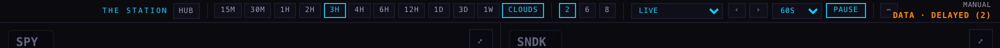
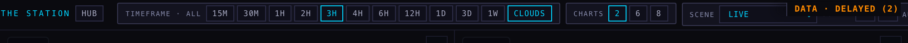
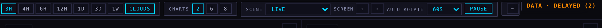
| before (698cab5) | after (this branch) | |
|---|---|---|
| measured | 1 row · one line, zoom 0.771 · strip 21 px · lowest label contrast 6.95:1 · below 4.5:1: 0 | 1 row · scrolls inside itself · strip 34 px · lowest label contrast 5.46:1 · below 4.5:1: 0 |
| labels under 4.5:1 before | none | |
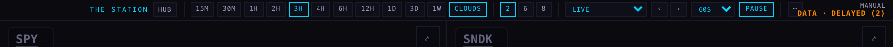
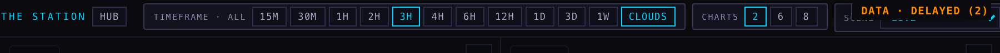
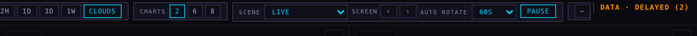
| before (698cab5) | after (this branch) | |
|---|---|---|
| measured | 1 row · one line, zoom 1 · strip 28 px · lowest label contrast 6.95:1 · below 4.5:1: 0 | 1 row · one line, zoom 0.986 · strip 31.8 px · lowest label contrast 7.22:1 · below 4.5:1: 0 |
| labels under 4.5:1 before | none | |
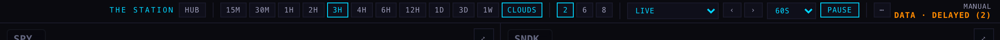
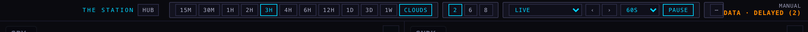
| before (698cab5) | after (this branch) | |
|---|---|---|
| measured | 2 rows · wrapped · strip 75.3 px · lowest label contrast 1.76:1 · below 4.5:1: 5 | 1 row · scrolls inside itself · strip 34 px · lowest label contrast 5.46:1 · below 4.5:1: 0 |
| labels under 4.5:1 before | scene@scenes=1.79; screen@scenes=1.79; auto rotate@scenes=1.79; timeframe · all@timeframe=1.76; charts@charts=1.76 | |
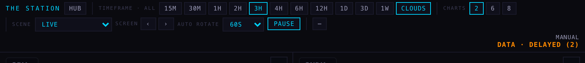
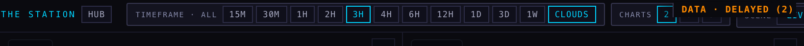
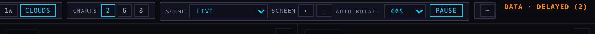
| before (698cab5) | after (this branch) | |
|---|---|---|
| measured | 5 rows · wrapped · strip 142.5 px · lowest label contrast 1.76:1 · below 4.5:1: 6 | 1 row · scrolls inside itself · strip 34 px · lowest label contrast 5.46:1 · below 4.5:1: 0 |
| labels under 4.5:1 before | scene@scenes=1.79; screen@scenes=1.79; auto rotate@scenes=1.79; timeframe · all@timeframe=1.76; charts@charts=1.76; panes@panes=1.77 | |
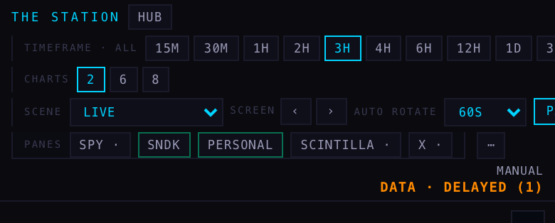
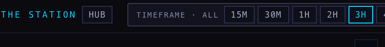
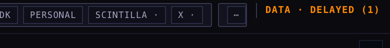
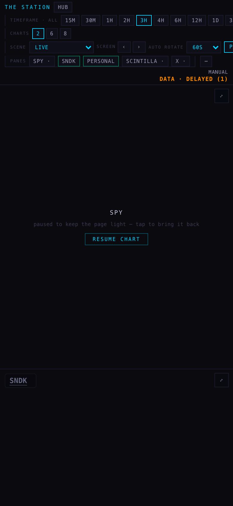
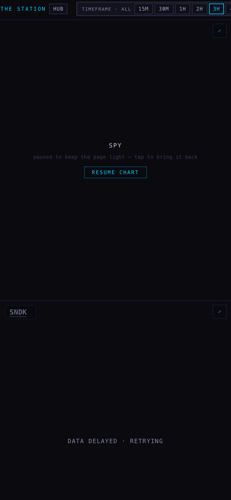
The chart shell's own mountTvInternal() was called on a real pane with USI:TICK. The TradingView embed URL was answered locally by a stub page that paints a dark background and draws a line 250 ms in, so this measures our shell's behaviour, not TradingView's servers. Before: TV_PANE_DRAW_MS = 14000. After: 1200, plus an 8 s ceiling. Twin station-shells/chart-v1/index.html byte-identical: true.
| time after mount | before (698cab5) | after (this branch) |
|---|---|---|
| +0.5 s | present, on top of the frame | present, under the frame |
| +2 s | present, on top of the frame | gone |
| +5 s | present, on top of the frame | gone |
| +9 s | present, on top of the frame | gone |
| +16 s | gone | gone |



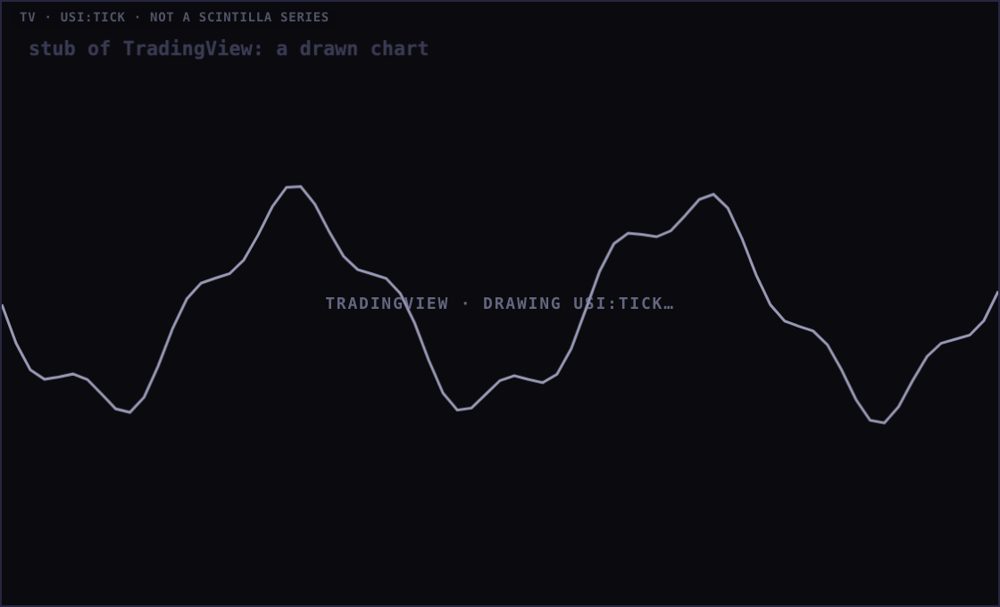

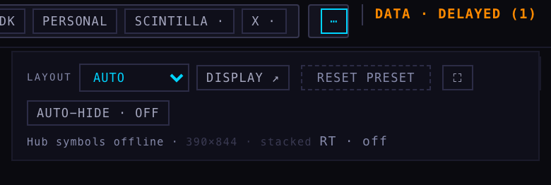
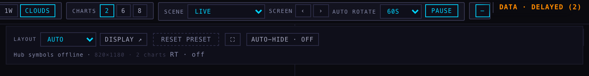
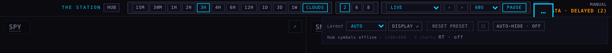
deck/index.html, the dock stylesheet: section tint, edge and gap; chip edge #2C2C46; rest chip colour #A6A8C0, hover #B4B6CC; the dock's own disabled rule; readout at 8 px; the dock-scroll rules (one row, overflow-x, labels in --dim, sticky readout with data age only, ⋯ panel fixed to the viewport, no caption); the phone media query that forced a wrap is gone; dock-wrap stays only as a fallback no code selects.deck/index.html, the engine: fitDock() adds dock-scroll instead of dock-wrap, counts section gaps in its width maths, and floors at 0.85 instead of 0.72; dockMagnifies() is off in a scrolling strip; the ⋯ panel is positioned under the strip when fixed.chart/index.html and its byte-identical twin station-shells/chart-v1/index.html: the frame above the waiting line and transparent until it paints; the attribution caption on top; 1.2 s grace after load and an 8 s ceiling instead of a 14 s hold.tests/station-dock-legibility.test.mjs (new, 6 tests): every dock label colour at 4.5:1 or better on the strip and on a tint; the disabled rule; the section tint, edge and gap; one row at every width (scroll, not wrap; floor at least 0.8); the video section stays hidden; the TradingView z-order, timings and the twin's identity. The 22 Sep dock suite still passes 10/10. Whole suite: base 19 failures, branch 18, none new.Same harness as the dock unit: pointer on the middle timeframe chip at 1440 × 900. Pointed chip 2×, every other section at 1.00×: true. Largest sideways drift of any chip centre while magnified: 0 px; top edge: 0 px. The › arrow: centre 1024.39 at rest, 1024.39 magnified, and its click changed the screen: true. Auto-hide: tucked 1848 ms after the pointer left, back on approach: true; switched off it stays out: true.
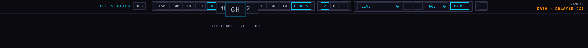
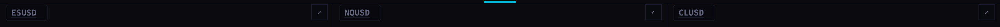
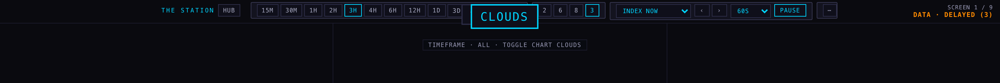
Harness and raw measurements: run folder evidence/capture-polish.cjs, evidence/capture-tv.cjs, evidence/before/measurements.json, evidence/after/measurements.json, evidence/*/tv/tv-measurements.json. Each capture verifies that the port it opened serves the named tree's bytes before it measures anything.